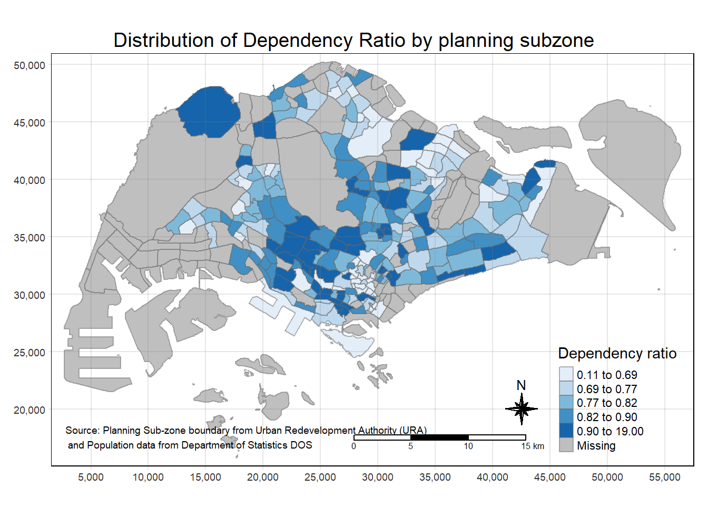
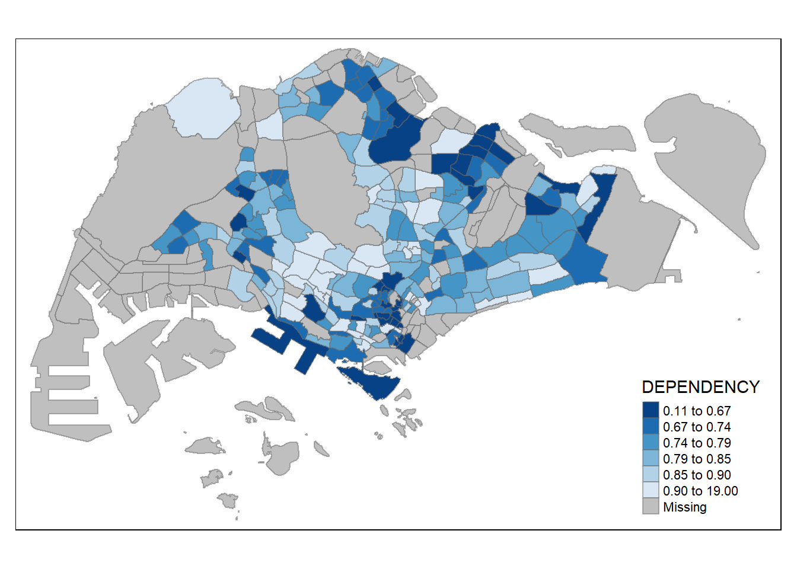
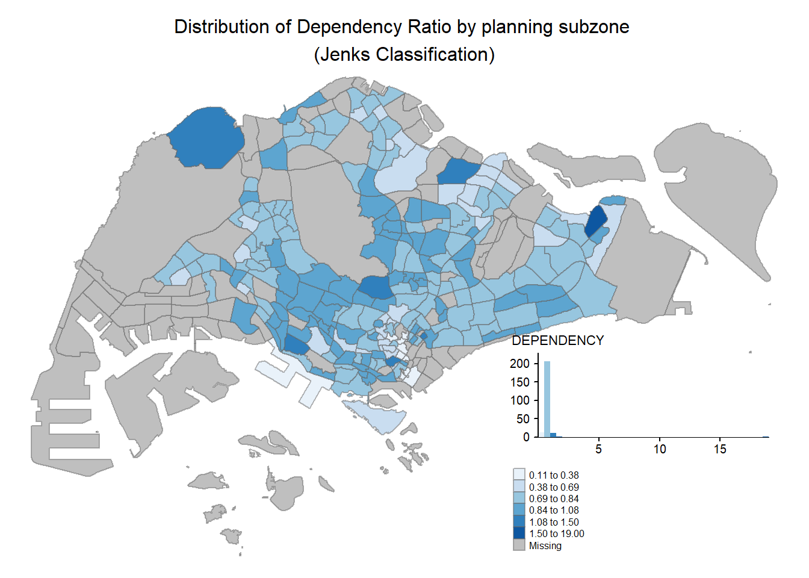
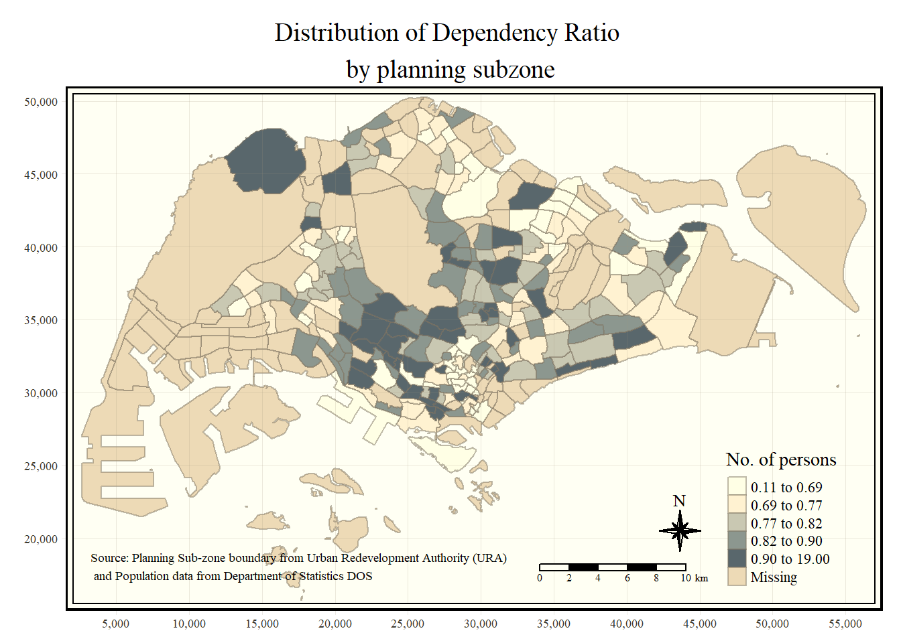
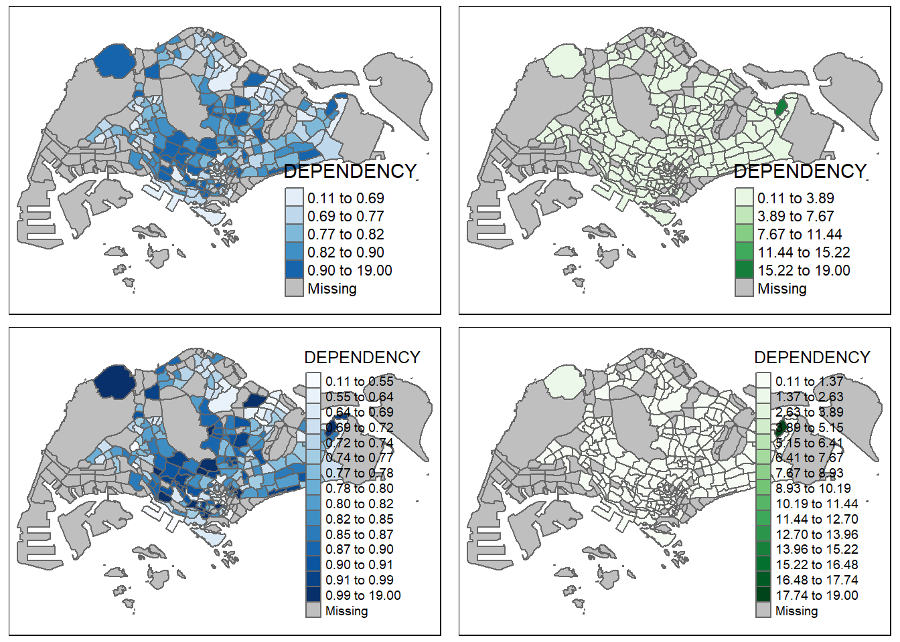

pacman::p_load(sf, tmap, tidyverse)Choropeth Mapping with R
Hands-on Exercise 2
Overview
Thematic mapping involves the use of map symbols to visualize selected properties of geographic features that are not naturally visible, such as population, temperature, crime rate, and property prices, just to mention a few of them.
GeoVisualization, on the other hand, works by providing graphical ideation to render a place, a phenomenon or a process visible, enabling human’s most powerful information-processing abilities - those of spatial cognition associated with our eye-brain vision system - to be directly brought to bear.
In this chapter, you will learn how to plot functional and truthful choropleth maps by using R package called tmap package.
Getting Started
In this exercise, the key R package used is tmap package in R. Besides tmap package, four other R packages will be used. They are:
readr for importing delimited text file
tidyr for tidying data
dplyr for wrangling data
sf for handling geospatial data
Among the four packages, readr, tidyr and dplyr are part of tidyverse package.
The code below will be used to install and load these packages in RStudio.
Notice we only need to install tidyverse instead of readr, tidyr and dplyr individually!
Importing Data into R
The Data
Two data set will be used to create the choropeth map.
Master Plan 2014 Subzone Boundary (Web) (i.e.
MP14_SUBZONE_WEB_PL)ESRI shapefile format (Geospatial data)
Downloaded from data.gov.sg
Consists of the geographical boundary of Singapore at the planning subzone level.
The data is based on URA Master Plan 2014
Singapore Residents by Planning Area / Subzone, Age Group, Sex and Type of Dwelling, June 2011-2020 (i.e.
respopagesextod2011to2020.csv)CSV format (Aspatial data)
Downloaded from Department of Statistics, Singapore
Although it does not contain any coordinate values, it’s PA and SZ fields can be used as unique identifiers to geocode to
MP14_SUBZONE_WEB_PLshapefile.
Importing Geospatial Data
The code below uses the st_read() function of sf package to import MP14_SUBZONE_WEB_PL shapefile into R as a simple feature data frame called mpsz.
mpsz <- st_read(dsn = "../../data/geospatial/MP14_SUBZONE_WEB_PL",
layer = "MP14_SUBZONE_WEB_PL")Reading layer `MP14_SUBZONE_WEB_PL' from data source
`C:\russelltjh\IS415-GAA\data\geospatial\MP14_SUBZONE_WEB_PL'
using driver `ESRI Shapefile'
Simple feature collection with 323 features and 15 fields
Geometry type: MULTIPOLYGON
Dimension: XY
Bounding box: xmin: 2667.538 ymin: 15748.72 xmax: 56396.44 ymax: 50256.33
Projected CRS: SVY21mpszSimple feature collection with 323 features and 15 fields
Geometry type: MULTIPOLYGON
Dimension: XY
Bounding box: xmin: 2667.538 ymin: 15748.72 xmax: 56396.44 ymax: 50256.33
Projected CRS: SVY21
First 10 features:
OBJECTID SUBZONE_NO SUBZONE_N SUBZONE_C CA_IND PLN_AREA_N
1 1 1 MARINA SOUTH MSSZ01 Y MARINA SOUTH
2 2 1 PEARL'S HILL OTSZ01 Y OUTRAM
3 3 3 BOAT QUAY SRSZ03 Y SINGAPORE RIVER
4 4 8 HENDERSON HILL BMSZ08 N BUKIT MERAH
5 5 3 REDHILL BMSZ03 N BUKIT MERAH
6 6 7 ALEXANDRA HILL BMSZ07 N BUKIT MERAH
7 7 9 BUKIT HO SWEE BMSZ09 N BUKIT MERAH
8 8 2 CLARKE QUAY SRSZ02 Y SINGAPORE RIVER
9 9 13 PASIR PANJANG 1 QTSZ13 N QUEENSTOWN
10 10 7 QUEENSWAY QTSZ07 N QUEENSTOWN
PLN_AREA_C REGION_N REGION_C INC_CRC FMEL_UPD_D X_ADDR
1 MS CENTRAL REGION CR 5ED7EB253F99252E 2014-12-05 31595.84
2 OT CENTRAL REGION CR 8C7149B9EB32EEFC 2014-12-05 28679.06
3 SR CENTRAL REGION CR C35FEFF02B13E0E5 2014-12-05 29654.96
4 BM CENTRAL REGION CR 3775D82C5DDBEFBD 2014-12-05 26782.83
5 BM CENTRAL REGION CR 85D9ABEF0A40678F 2014-12-05 26201.96
6 BM CENTRAL REGION CR 9D286521EF5E3B59 2014-12-05 25358.82
7 BM CENTRAL REGION CR 7839A8577144EFE2 2014-12-05 27680.06
8 SR CENTRAL REGION CR 48661DC0FBA09F7A 2014-12-05 29253.21
9 QT CENTRAL REGION CR 1F721290C421BFAB 2014-12-05 22077.34
10 QT CENTRAL REGION CR 3580D2AFFBEE914C 2014-12-05 24168.31
Y_ADDR SHAPE_Leng SHAPE_Area geometry
1 29220.19 5267.381 1630379.3 MULTIPOLYGON (((31495.56 30...
2 29782.05 3506.107 559816.2 MULTIPOLYGON (((29092.28 30...
3 29974.66 1740.926 160807.5 MULTIPOLYGON (((29932.33 29...
4 29933.77 3313.625 595428.9 MULTIPOLYGON (((27131.28 30...
5 30005.70 2825.594 387429.4 MULTIPOLYGON (((26451.03 30...
6 29991.38 4428.913 1030378.8 MULTIPOLYGON (((25899.7 297...
7 30230.86 3275.312 551732.0 MULTIPOLYGON (((27746.95 30...
8 30222.86 2208.619 290184.7 MULTIPOLYGON (((29351.26 29...
9 29893.78 6571.323 1084792.3 MULTIPOLYGON (((20996.49 30...
10 30104.18 3454.239 631644.3 MULTIPOLYGON (((24472.11 29...You can examine the content of mpsz by using the code below.
mpszSimple feature collection with 323 features and 15 fields
Geometry type: MULTIPOLYGON
Dimension: XY
Bounding box: xmin: 2667.538 ymin: 15748.72 xmax: 56396.44 ymax: 50256.33
Projected CRS: SVY21
First 10 features:
OBJECTID SUBZONE_NO SUBZONE_N SUBZONE_C CA_IND PLN_AREA_N
1 1 1 MARINA SOUTH MSSZ01 Y MARINA SOUTH
2 2 1 PEARL'S HILL OTSZ01 Y OUTRAM
3 3 3 BOAT QUAY SRSZ03 Y SINGAPORE RIVER
4 4 8 HENDERSON HILL BMSZ08 N BUKIT MERAH
5 5 3 REDHILL BMSZ03 N BUKIT MERAH
6 6 7 ALEXANDRA HILL BMSZ07 N BUKIT MERAH
7 7 9 BUKIT HO SWEE BMSZ09 N BUKIT MERAH
8 8 2 CLARKE QUAY SRSZ02 Y SINGAPORE RIVER
9 9 13 PASIR PANJANG 1 QTSZ13 N QUEENSTOWN
10 10 7 QUEENSWAY QTSZ07 N QUEENSTOWN
PLN_AREA_C REGION_N REGION_C INC_CRC FMEL_UPD_D X_ADDR
1 MS CENTRAL REGION CR 5ED7EB253F99252E 2014-12-05 31595.84
2 OT CENTRAL REGION CR 8C7149B9EB32EEFC 2014-12-05 28679.06
3 SR CENTRAL REGION CR C35FEFF02B13E0E5 2014-12-05 29654.96
4 BM CENTRAL REGION CR 3775D82C5DDBEFBD 2014-12-05 26782.83
5 BM CENTRAL REGION CR 85D9ABEF0A40678F 2014-12-05 26201.96
6 BM CENTRAL REGION CR 9D286521EF5E3B59 2014-12-05 25358.82
7 BM CENTRAL REGION CR 7839A8577144EFE2 2014-12-05 27680.06
8 SR CENTRAL REGION CR 48661DC0FBA09F7A 2014-12-05 29253.21
9 QT CENTRAL REGION CR 1F721290C421BFAB 2014-12-05 22077.34
10 QT CENTRAL REGION CR 3580D2AFFBEE914C 2014-12-05 24168.31
Y_ADDR SHAPE_Leng SHAPE_Area geometry
1 29220.19 5267.381 1630379.3 MULTIPOLYGON (((31495.56 30...
2 29782.05 3506.107 559816.2 MULTIPOLYGON (((29092.28 30...
3 29974.66 1740.926 160807.5 MULTIPOLYGON (((29932.33 29...
4 29933.77 3313.625 595428.9 MULTIPOLYGON (((27131.28 30...
5 30005.70 2825.594 387429.4 MULTIPOLYGON (((26451.03 30...
6 29991.38 4428.913 1030378.8 MULTIPOLYGON (((25899.7 297...
7 30230.86 3275.312 551732.0 MULTIPOLYGON (((27746.95 30...
8 30222.86 2208.619 290184.7 MULTIPOLYGON (((29351.26 29...
9 29893.78 6571.323 1084792.3 MULTIPOLYGON (((20996.49 30...
10 30104.18 3454.239 631644.3 MULTIPOLYGON (((24472.11 29...Notice that only the first ten records will be displayed!
Importing Attribute Data
We will import repopagesextod2011to2020.csv into RStudio and save the file into an R dataframe called popdata.
The task will be performed by using read_csv() from readr package as show below.
popdata <- read_csv("../../data/aspatial/respopagesextod2011to2020/respopagesextod2011to2020.csv")Data Preparation
Before a thematic map can be prepared, we must prepare a data table with year 2020 values. The data table should include the variables PA, SZ, YOUNG, ECONOMY ACTIVE, AGED, TOTAL, DEPENDENCY.
YOUNG: age group 0 to 4 until age group 20 to 24
ECONOMY ACTIVE: age group 25-29 until age group 60-64
AGED: age group 65 and above
TOTAL: all age group
DEPENDENCY: the ratio between young and aged against economy active group
Data Wrangling
The following data wrangling and transformation functions will be used:
pivot_wider()of tidyr packagemutate(),filter(),group_by()andselect()of dplyr package
popdata2020 <- popdata %>%
filter(Time == 2020) %>%
group_by(PA, SZ, AG) %>%
summarise(`POP` = sum(`Pop`)) %>%
ungroup()%>%
pivot_wider(names_from=AG,
values_from=POP) %>%
mutate(YOUNG = rowSums(.[3:6])
+rowSums(.[12])) %>%
mutate(`ECONOMY ACTIVE` = rowSums(.[7:11])+
rowSums(.[13:15]))%>%
mutate(`AGED`=rowSums(.[16:21])) %>%
mutate(`TOTAL`=rowSums(.[3:21])) %>%
mutate(`DEPENDENCY` = (`YOUNG` + `AGED`)
/`ECONOMY ACTIVE`) %>%
select(`PA`, `SZ`, `YOUNG`,
`ECONOMY ACTIVE`, `AGED`,
`TOTAL`, `DEPENDENCY`)Joining the Attribute data and Geospatial data
Before we can perform the georelational join, one extra step is required to convert the values in PA and SZ fields to uppercase. This is because the values of PA and SZ fields are made up of upper- and lowercase. On the other, hand the SUBZONE_N and PLN_AREA_N are in uppercase.
popdata2020 <- popdata2020 %>%
mutate_at(.vars = vars(PA, SZ),
.funs = list(toupper)) %>%
filter(`ECONOMY ACTIVE` > 0)Next, left_join() of dplyr is used to join the geographical data and attribute table using planning subzone name e.g. SUBZONE_N and SZ as the common identifier.
mpsz_pop2020 <- left_join(mpsz, popdata2020,
by = c("SUBZONE_N" = "SZ"))Thing to learn from the code chunk above:
left_join()of dplyr package is used withmpszsimple feature data frame as the left data table is to ensure that the output will be a simple features data frame.
write_rds(mpsz_pop2020, "../../data/rds/mpszpop2020.rds")Choropleth Mapping Geospatial Data using tmap
Choropleth mapping involves the symbolization of enumeration units, such as countries, provinces, states, counties or census units, using area patterns or graduated colors. For example, a social scientist may need to use a choropleth map to portray the spatial distribution of aged population of Singapore by Master Plan 2014 Subzone Boundary.
Two approaches can be used to prepare thematic map using tmap, they are:
Plotting a thematic map quickly using
qtm().Plotting highly customization thematic map by using tmap elements.
Plotting a Choropleth map quickly using qtm()
The easiest and quickest to draw a choropleth map using tmap is using qtm(). It is concise and provides a good default visualization in many cases.
The code below will draw a cartographic standard choropleth map as shown below.
tmap_mode("plot")
qtm(mpsz_pop2020,
fill = "DEPENDENCY")
Things to learn from the code chunk above:
tmap_mode()with “plot” option is used to produce a static map. For interactive mode, “view” option should be used.fillargument is used to map the attribute (i.e. DEPENDENCY)
Creating a Choropleth map by using tmap’s elements
Despite its usefulness of drawing a choropleth map quickly and easily, the disadvantage of qtm() is that it makes aesthetics of individual layers harder to control. To draw a high quality cartographic choropleth map, tmap’s drawing elements should be used.
tm_shape(mpsz_pop2020)+
tm_fill("DEPENDENCY",
style = "quantile",
palette = "Blues",
title = "Dependency ratio") +
tm_layout(main.title = "Distribution of Dependency Ratio by planning subzone",
main.title.position = "center",
main.title.size = 1.2,
legend.height = 0.45,
legend.width = 0.35,
frame = TRUE) +
tm_borders(alpha = 0.5) +
tm_compass(type="8star", size = 2) +
tm_scale_bar() +
tm_grid(alpha=0.2) +
tm_credits("Source: Planning Sub-zone boundary from Urban Redevelopment Authority (URA)\n and Population data from Department of Statistics DOS",
position = c("left", "bottom"))
In the following sections, we will break down the process for plotting these elements.
Drawing a base map
The basic building block of tmap is tm_shape() followed by one or more layer elements such as tm_fill() and tm_polygons().
In the code below,
tm_shape()is used to define the input data (i.e.mpsz_pop2020) andtm_polygons()is used to draw the planning subzone polygons.
tm_shape(mpsz_pop2020) +
tm_polygons()
Drawing a choropleth map using tm_polygons()
To draw a choropleth map showing the geographical distribution of a selected variable by planning subzone, we just need to assign the target variable such as Dependency to tm_polygons().
tm_shape(mpsz_pop2020) +
tm_polygons("DEPENDENCY")
Things to learn from tm_polygons():
The default interval binning used to draw the choropleth map is called “pretty”.
The default color scheme used is
YlOrRdof ColorBrewer.By default, missing values will be shaded in grey.
Drawing a choropleth map using tm_fill() and tm_border()
Actually, tm_polygons() is a wrapper of tm_fill() and tm_border().
tm_fill()shades the polygons by using the default color schemetm_borders()adds the borders of the shapefile onto the choropleth map
The code below draws a choropleth map by using the tm_fill() alone.
tm_shape(mpsz_pop2020) +
tm_fill("DEPENDENCY")
Notice that the planning subzones are shared according to the respective dependency values.
To add the boundary of the planning subzones, tm_borders() will be used in the code below.
tm_shape(mpsz_pop2020) +
tm_fill("DEPENDENCY") +
tm_borders(lwd = 0.1, alpha = 1)
Notice that light-gray border lines have been added.
The alpha argument is used to define transparency number between 0 (transparent) and 1 (opaque). By default, the alpha value of the col is used (normally 1).
Besides alpha argument, there are three other arguments for tm_borders(), they are:
col= border color.lwd= border line width. The default is 1.lty= border line type. The default is “solid”.
Data Classification methods of tmap
Most choropleth maps employ some methods of data classification. The point of classification is to take a large number of observations and group them into data ranges or classes.
tmap provides a total of 10 data classification methods: fixed, sd, equal, pretty (default), quantile, kmeans, hclust, bclust, fisher, and jenks.
To define a data classification method, the style argument of tm_fill() or tm_polygons() will be used.
Plotting choropleth maps with built-in classification methods
The code below shows a quantile data classification that uses 5 classes.
tm_shape(mpsz_pop2020) +
tm_fill("DEPENDENCY",
n = 5,
style = "quantile") +
tm_borders(alpha = 0.5)
In the code below, equal data classification method is used.
tm_shape(mpsz_pop2020) +
tm_fill("DEPENDENCY",
n = 5,
style = "equal") +
tm_borders(alpha = 0.5)
Notice that the distribution of quantile data classification method are more evenly distributed than equal data classification method.
Warning: Maps Lie!
DIY: Using what you had learned prepare choropleth maps by using different classification methods supported by tmap and compare their differences
DIY: Preparing choropleth maps by using similar classification method but with different numbers of classes (i.e. 2, 6, 10, 20). Compare the output maps, what observation can you draw?
See the bottom of this page for the maps.
Plotting choropleth map with custom break
For all the built-in styles, the category breaks are computed internally. In order to override these defaults, the breakpoints can be set explicitly by means of the breaks argument in tm_fill(). It is important to note that, in tmap, the breaks include a minimum and maximum. As a result, in order to end up with n categories, n+1 elements must be specified in the breaks option (the values must be in increasing order).
Before we get started, it is always a good practice to get some descriptive statistics on the variable before setting the break points. The code below will be used to compute and display the descriptive statistics of DEPENDENCY field.
summary(mpsz_pop2020$DEPENDENCY) Min. 1st Qu. Median Mean 3rd Qu. Max. NA's
0.1111 0.7147 0.7866 0.8585 0.8763 19.0000 92 With reference to the results above, we set break point at 0.60, 0.70, 0.80, and 0.90. In addition, we also need to include a minimum and maximum, which we set at 0 and 100. Our breaks vector is thus c(0, 0.60, 0.70, 0.80, 0.90, 1.00)
Now, we will plot the choropleth map using the code below.
tm_shape(mpsz_pop2020)+
tm_fill("DEPENDENCY",
breaks = c(0, 0.60, 0.70, 0.80, 0.90, 1.00)) +
tm_borders(alpha = 0.5)
Color Scheme
tmap supports color ramps either defined by the user or a set of predefined color ramps from the RColorBrewer package.
Using ColorBrewer palette
To change the color, we assign the preferred color to palette argument of tm_fill() as shown below.
tm_shape(mpsz_pop2020) +
tm_fill("DEPENDENCY",
n = 6,
style = "quantile",
palette = "Blues") +
tm_borders(alpha = 0.5)
To reverse the color shading, add a “-” prefix.
tm_shape(mpsz_pop2020) +
tm_fill("DEPENDENCY",
n = 6,
style = "quantile",
palette = "-Blues") +
tm_borders(alpha = 0.5)
Map Layouts
Map Layouts refers to the combination of all map elements into a cohesive map. Map elements include among others the objects to be mapped, the title, the scale bar, the compass, margins and aspect ratios. Colour settings and data classification methods covered in the previous section relate to the palette and break-points are used to affect how the map looks.
Map Legend
In tmap, several legend options are provided to change the placement, format and appearance of the legend.
tm_shape(mpsz_pop2020) +
tm_fill("DEPENDENCY",
n = 6,
style = "jenks",
palette = "Blues",
legend.hist = TRUE,
legend.is.portrait = TRUE,
legend.hist.z = 0.1) +
tm_layout(main.title = "Distribution of Dependency Ratio by planning subzone \n(Jenks Classification)",
main.title.position = "center",
main.title.size = 1,
legend.height = 0.45,
legend.width = 0.35,
legend.outside = FALSE,
legend.position = c("right", "bottom"),
frame = FALSE) +
tm_borders(alpha = 0.5)
Map Style
tmap allows a wide variety of layout settings to be changed. They can be called by using tmap_style()
The code chunk below shows the classic style is used.
tm_shape(mpsz_pop2020) +
tm_fill("DEPENDENCY",
style = "quantile",
palette = "-Greens",) +
tm_borders(alpha = 0.5) +
tmap_style("classic")
Cartographic Furniture
Besides map style, tmap also provides arguments to draw other map furniture such as compass, scale bar and grid lines.
In the code chunk below, tm_compass(), tm_scale_bar() and tm_grid() are used to add compass, scale bar and grid lines onto the choropleth map.
tm_shape(mpsz_pop2020) +
tm_fill("DEPENDENCY",
style = "quantile",
palette = "Blues",
title = "No. of persons") +
tm_layout(main.title = "Distribution of Dependency Ratio \nby planning subzone",
main.title.position = "center",
main.title.size = 1.2,
legend.height = 0.45,
legend.width = 0.35,
frame = TRUE) +
tm_borders(alpha = 0.5) +
tm_compass(type = "8star", size = 2) +
tm_scale_bar(width = 0.15) +
tm_grid(lwd = 0.1, alpha = 0.2) +
tm_credits("Source: Planning Sub-zone boundary from Urban Redevelopment Authority (URA)\n and Population data from Department of Statistics DOS",
position = c("left", "bottom"))
To reset the default style, refer to the code below.
tmap_style("white")Drawing Small Multiple Choropleth Maps
Small multiple maps, also referred to as facet maps, are composed of many maps arrange side-by-side, and sometimes stacked vertically. Small multiple maps enable the visualization of how spatial relationships change with respect to another variable, such as time.
In tmap, small multiple maps can be plotted in 3 ways:
by assigning multiple values to at least one of the aesthetic arguments
by defining a group-by variable in
tm_facets()by creating multiple stand-alone maps with
tmap_arrange()
By assigning multiple values to at least one of the aesthetic arguments
In this example, small multiple choropleth maps are created by defining ncols in tm_fill()
tm_shape(mpsz_pop2020) +
tm_fill(c("YOUNG", "AGED"),
style = "equal",
palette = "Blues") +
tm_layout(legend.position = c("right", "bottom")) +
tm_borders(alpha = 0.5) +
tmap_style("white")
In this example, small multiple choropleth maps are created by assigning multiple values to at least one of the aesthetic arguments
tm_shape(mpsz_pop2020) +
tm_polygons(c("DEPENDENCY","AGED"),
style = c("equal", "quantile"),
palette = list("Blues","Greens")) +
tm_layout(legend.position = c("right", "bottom"))
By defining a group-by variable in tm_facets()
In this example, multiple small choropleth maps are created by using tm_facets()
tm_shape(mpsz_pop2020) +
tm_fill("DEPENDENCY",
style = "quantile",
palette = "Blues",
thres.poly = 0) +
tm_facets(by = "REGION_N",
free.coords = TRUE,
drop.shapes = TRUE) +
tm_layout(legend.show = FALSE,
title.position = c("center", "center"),
title.size = 20) +
tm_borders(alpha = 0.5)
By creating multiple stand-alone maps with tmap_arrange()
In this example, multiple small choropleth maps are created by creating multiple stand-alone maps with tmap_arrange()
youngmap <- tm_shape(mpsz_pop2020) +
tm_polygons("YOUNG",
style = "quantile",
palette = "Blues")
agedmap <- tm_shape(mpsz_pop2020) +
tm_polygons("AGED",
style = "quantile",
palette = "Blues")
tmap_arrange(youngmap, agedmap, asp=1, ncol=2)
Mapping Spatial Object Meeting a Selection Criterion
Instead of creating small multiple choropleth map, you can also use selection function to map spatial objects meeting the selection criterion.
tm_shape(mpsz_pop2020[mpsz_pop2020$REGION_N=="CENTRAL REGION", ]) +
tm_fill("DEPENDENCY",
style = "quantile",
palette = "Blues",
legend.hist = TRUE,
legend.is.portrait = TRUE,
legend.hist.z = 0.1) +
tm_layout(legend.outside = TRUE,
legend.height = 0.45,
legend.width = 5.0,
legend.position = c("right", "bottom"),
frame = FALSE) +
tm_borders(alpha = 0.5)
DIY Exercise
DIY: Using what you had learned prepare choropleth maps by using different classification methods supported by tmap and compare their differences
DIY: Preparing choropleth maps by using similar classification method but with different numbers of classes (i.e. 2, 6, 10, 20). Compare the output maps, what observation can you draw?
quantile_lowbin_map <- tm_shape(mpsz_pop2020) +
tm_polygons("DEPENDENCY",
n = 5,
style = "quantile",
palette = "Blues")
quantile_highbin_map <- tm_shape(mpsz_pop2020) +
tm_polygons("DEPENDENCY",
n = 15,
style = "quantile",
palette = "Blues")
equal_lowbin_map <- tm_shape(mpsz_pop2020) +
tm_polygons("DEPENDENCY",
n = 5,
style = "equal",
palette = "Greens")
equal_highbin_map <- tm_shape(mpsz_pop2020) +
tm_polygons("DEPENDENCY",
n = 15,
style = "equal",
palette = "Greens")
tmap_arrange(quantile_lowbin_map,
equal_lowbin_map,
quantile_highbin_map,
equal_highbin_map,
ncol=2)
Observations:
- Different classification methods and bin numbers can make the distribution look more polarizing, which allows the narrative to emphasize the difference between the lowest and highest parts of the distribution.